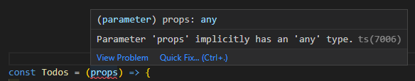
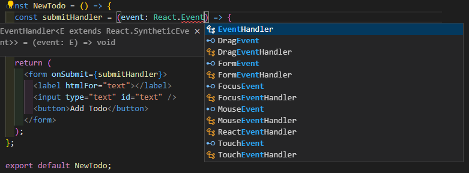
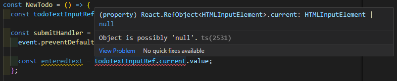

React Project with TypeScript
雖然 React 預設是沒有使用 TypeScript 的，但 React 提供了非常簡易的方式來建立 TypeScript 專案，接下來將在 React 專案中導入 TypeScript
Installation
- 透過 create-create-app 建立 React 專案
在官方的文件中，就可以很輕易的直接透過 npm or yarn 來建立包含 TypeScript 的 React 專案中
1 | $ npx create-react-app my-app --template typescript |
安裝後，開啟專案會看到出現副檔名為 .tsx 的檔案，其實這和 .ts 一樣都是 TypeScript 檔案，只是因為 React 使用了 JSX 導致
1 | src |
打開 package.json 後，會看到除了 React 預設的 library react、react-dom 與 typescript 之外，還會有前方包含 @types/ 的 dependencies，會有這些 dependencies 是因為這些 libraries 預設並沒有包含 TypeScript，所以需要為這些 libraries 額外加上 Type 以在 TypeScript 專案中運行
1 | // package.json |
- 透過 tsconfig.json 定義 TyepScript
可以參考這篇文章的基礎設定，如果對其他選項有興趣可以進一步從官網了解
- 透過 .eslintrc.json 定義 ESLint
執行以下指令後，就會有一連串的設定問題出現，接下來只要依照專案需求回復，就會自動在專案下建立符合的設定檔
1 | $ npx exlint --init |
- 透過 .prettierrc.json 定義 prettier
同樣可以透過這篇文章為 prettier 做基本的設定，額外需求可以到官網進一步了解
Working with Props
一個簡單的 component 如下:
1 | // Todos.tsx |
透過 props 傳進來的資料顯示於 JSX 上，一般的 React 專案就寫到這裡了，但當我們導入 TypeScript 後，props 就會出現錯誤提示，如下:

原因是 TypeScript 不知道 props 內的資料型別，那很簡單，直接在 props 加入預期的資料型別
1 | const Todos = (props: { items: string[] }) => { |
這麼一來錯誤提示就消失了
props.children & React.FC
但不要忘了，props 除了我們自定義的資料外，還有一個預設的 key - children，但 props.children 是 component 在使用時動態加入 JSX，所以無法在一開始就確認型別
為了解決這個問題，React 18 以前提供了一組 generic type - React.FC (Functional Component)，可以直接透過 react 取得，但其實是安裝 TypeScript 後，@types/react 所提供的型別，這組 type 就包含了 key children，如果在額外加入自定義的 key，就會自動幫我們 merge children & custom key
1 | const Todos: React.FC<{ items: string[] }> = (props) => { |
但在 React 18 開始，React.FC 預設就不會提供 children key 了，取而代之的是，需要透過 React 提供的另一個 type - React.ReactNode 來定義 children
1 | type Props = { |
如果 component 的使用不一定有 children，就需要在 Props type children 加上 ? 代表可有可無
1 | // other component |
Adding a Data Model
我們還可以將資料更進一步抽離出來;首先，新增一個資料夾 models(可自定義)，並在其中新增資料同名檔案 ex: Todo.ts，並在檔案中透過 JS class 定義資料與型別
1 | class Todo { |
這麼做的好處是我們可以在同一個檔案管理資料與其型別，不需要個別在資料來源與資料使用處個別定義型別
1 | // other component |
Child Component
如果進一步將 <li> 抽離成為一個 child component，還是可以透過指定 class key 的方式取得單獨資料屬性的型別
1 | // Todos.ts |
Event Type
JavaScript 中包含多種 user event，React 提供了各種 event type 以滿足 event 呼叫時所需的預設型別定義，只要輸入 React.Event 就會出現許多 event type，如下範例是一個 form submit event，type 就是 React.FormEvent
1 | const NewTodo = () => { |

refs & useRef
在 React 表單中，可以透過 useRef() hook 來綁定欄位已取得資料
1 | const NewTodo = () => { |
但在 TypeScript 專案中寫到這裡會在 input ref 的地方出現一大串錯誤提示，原因是 TypeScript 並不知道 ref 所綁定的是什麼 HTML object，而在 HTML 中的每一個 tag 都有預設的 type object，input 就是 HTMLInputElement，所以可以在 useRef() hook 上定義型別
1 | const todoTextInputRef = useRef<HTMLInputElement>(); |
但仍會發現 input ref 的錯誤提示並未消失，原因是缺少預設值，這裡可以直接給定 null 作為初始值，錯誤提示就會消失了
1 | const todoTextInputRef = useRef<HTMLInputElement>(null); |
接著在 form submit 時取用欄位中的值會再次出現錯誤提示，原因是雖然我們確定在 submit event 的當下，這個 ref 一定會綁定到指定欄位，但 TypeScript 並不會進一步分析我們的程式碼，所以對它來說有可能出現 null
1 | const submitHandler = (event: React.FormEvent) => { |

為了解決這個問題，可以在 current 加上確認符號
- ?: 有可能不存在，null or undefined
- !: 確定存在，不會是 null or undefined
1 | const enteredText = todoTextInputRef.current!.value; |
Managing State
當然實際上，todo list 不會是一筆靜態的資料，而是動態改變的 state，所以是由 child component - NewTodo 透過 props event function 來改變上層的 state;當 props 是一個 function 時，可以透過 empty arrow function 作為型別來定義，就如 object 之於 {} 和 array 之於 []，其中還可以包含參數和回傳值的型別定義
1 | // NewTodo |
而在資料層就可以透過 props function 所傳回來的值對 state 進行更新，useState() 也是一個 generic type function，所以一樣可以針對不同 state 定義型別
1 | import Todos from "./components/Todos"; |